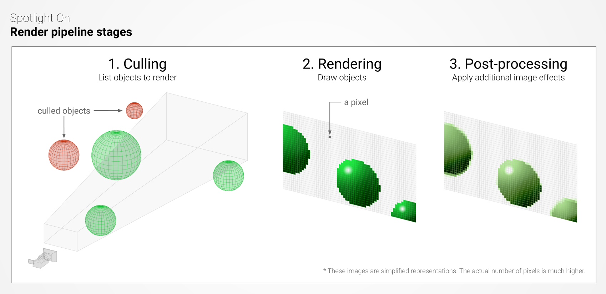

So, should a game programmer be in charge of effect, post-processing and particle system?
Construction Ongoing
This is not a finished post. The final version may have drastic differences as compared to this draft.
Post Series
This posts belongs to the series: Down to Unity 2D Stacks. You can see all posts in this series here.
Expected Reader Experience: Medium
This post is good for readers having some basic knowledge on the topic: Unity 2D Graphics. The ideal reader group include those who have a good practical command of Unity 2D yet want to check whether they have missed anything important or wonder about the underlying concept. However, since this post belongs to a series, you are expected to master the previous posts in the series.
Art Style
Perspective
- Top-down
- Side-on
- Isometric
Style
- Minimalist
- Pixel
- Illustrative
- Pre-rendered 3D
Rendering
Pipeline

- A render pipeline performs a series of operations that take the contents of a Scene, and displays them on a screen.
- At a high level these operations are: Culling, Rendering, Post-processing.
- Unity has 3 render pipelines: SRP (limited customization), URP (optimized graphics, more customization), HDRP (high-fidelity graphics on high-end platforms).
- Usually we will use URP. By Default, when you start a project Unity uses SRP (Now, there are URP template to start with). Many of the features described below rely on URP.
- To switch to URP:
- Install URP package (This installs Shader Graph as well).
- Create an URP Pipeline Asset and a 2D Renderer. Swap the 2D into the PipeLine Asset and Delete the original renderer.
- Apply the Pipeline to Project Settings > Graphics > Scriptable Render Pipeline Setting.
- Upgrade all existing assets to use URP (Edit > URP > Upgrade)
- To switch back to SRP, remove any Scriptable Render Pipeline from there.
Texture, Material, Shader
- Conceptually,
- Textures are bitmap images.
- Shaders are scripts that contain the mathematical calculations and algorithms for calculating the color of each pixel rendered based on the lighting input and the material configuration.
- Materials define how a surface should be rendered. Materials use shaders as a reference to tell Unity how to render a surface and allow for configuration of the shader code. It is like a wrapper around the shader.
- A material can contain references to textures so that the shader can use the textures in its calculations.
- Unity have several Materials 2D by out of box.
- “Sprite-Default” will not react to 2D Lighting. This is the default material to be attached to gameobjects under SRP.
- “Sprite-Lit” will react to 2D Lighting. Gameobject with this material would appear black when there is no Light 2D. This is the default material under URP.
- “Sprite-Unlit” Will not react to 2D Lighting as well.
- You can create 2D Shaders now with the new URP!
ShaderGraph
- You can handwrite shader code or use this visual scripting tools to create shaders.
- Common Node
- Math
- Sine: used to create rolling waves, rustling vegetation, floating magical entities and more.
- Math
- Common Shaders How-tos
- Dissolution
- Rustling
- Outline
- Trail
- Water Reflection
Post-processing
- A collaboration among three parties
- There must be a Volume with effect profile
- Camera must enable Post-processing
- Pipeline Asset must enable Quality > HDR (You usually need this)
Colors
- Tonemapper: Tonemapper maps HDR color scale to a scale that local monitor can display. Just remember to always put an Tonemapper there when HDR is enabled. ACES has more of a cinematic look.
- White Balance:
Temperaturecontrols between blue and yellow, andTintcontrols between green and purple. - Color Adjustment:
- Pretty self-explanatory
- Empirical Value: Tonemapper uses ACES, Color Adjustment > Post Exposure set to 0.5 and Saturation set to -5 gives a bright and nice appearance.
- Channel Mixer
- Color Curves
- Shadows Midtones Highlights/ Lift Gamma Gain
- Split Toning
- Color Lookup Table
Effects
- Bloom
- Let bright area bleed into their neighborhood.
- Make a glow
- Export an emission map from Photoshop that can be superposed onto the original spritesheet, with the part that you want to glow being white and otherwise black.
- Import this into Unity. Set
Texture TypetoDefault. Other import settings should be the same. - Attach this to the original spritesheet as a secondary texture.
- Now, you can access this secondary texture (
_followed by the name of the emission map set in the Sprite Editor) in Shader Graph and use an addition to blend colors. - Use a HDR color to multiply to that secondary texture before addition onto the
_MainTex. - Use a
Bloomeffect profile on a Volume and set threshold to more than 1 (this is to prevent normal sprite from glowing).
- Bloom dirty lens
- Chromatic Aberration
- Film Grain
- Vignette
Lens
- Depth of Field
- Motion Blur
- Lens Distortion
- Can be used to create a high-speed wrapping effect
- Panini Projection
Located on Camera
- Dithering
- Anti-aliasing
2D Light
- Always select Target Layer.
Sprite (2D Mesh)
Import Settings
Texture Type: this is set toSprite (2D and UI)after importing assets by default when under 2D mode. If not, manually set it to beSprite (2D and UI)for 2D projects.
Sprite Renderer
Colorshould be thought of as a tint color on Sprite. If working with complete white Sprite then tint color would be the only color blended into the sprite; if working with a completely black Sprite, tint would have no effect.Draw Mode:Slicedis for Sprite that would be applied 9-slicing technique with the middle section being stretched,Tiledis for Sprite that would be applied 9-slicing technique with the middle section being repeated.Mask Interaction: Define the interaction mode between this Sprite and the Sprite Mask.Sprite Sort Point: Define a point used in the calculation of the distance between this Sprite and the camera. This is useful when you sort Sprite by distance from camera.Material: Material used to render the Sprite. Unity supplies some default sprite materials by default.Sorting Layer,Order in Layer: Define a Sorting Layer and Layer in Order to sort Sprite.
Texture Packer
Sprite Shape
Tilemaps
2D Camera
Camera General
- Marking a Camera as Orthographic removes all perspective from the Camera’s view. This is mostly useful for making isometric or 2D games.
- Camera size
- We would first decide on a rendering resolution. This is usually much smaller than the actual screen resolution that players are using in the case of pixel art games. For example, we can use a
960 by 540rendering resolution, which is 16:9, and the player may run the game on a full HD screen (1920 by 1080). - We also need to decide beforehand how many pixels a “square” of our Sprite would have. This may be 16, 32 or 64. Set that as the
Pixel Per Unitwhen importing the Sprite. - Camera Size = Height of the rendering resolution / 2 / pixel per unit.
- But the thinking process actually is the other way around: For example, I would want a very refined pixel art style in the game so pixel per unit is set to 64 (more work for the artists); I want a screen that can fit 9 unit square height (and thus 16 unit square width), which means I want a camera size of 4.5; The resulting rendering resolution is
(16 * 64) by (9 * 64)which calculates to be1024 by 576.
- We would first decide on a rendering resolution. This is usually much smaller than the actual screen resolution that players are using in the case of pixel art games. For example, we can use a
Pixel Perfect Camera
Cinemachine
Parallax
2D Sorting
2D Animation
Animator
Behavior Tree
Particle System
Buy me a cup of coffee?


- Post link: https://reimirno.github.io/2021/11/23/Unity-2D-Collections-2/
- Copyright Notice: All articles in this blog are licensed under unless otherwise stated.
GitHub Discussions